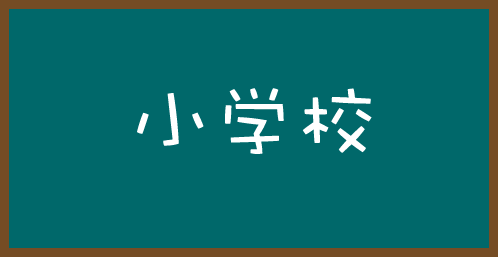

仮タイトル 五泉英数塾
当サイトの目的は小中学生の英語・数学で分かりにくい単元を易しく解説することです。管理人（ふじちゃん）は将来的に学習塾を開くことを計画しています。その前段階として小中学生に無料で英語・数学を教えることで管理人自身が勉強し、計画につなげていきたいと思っています。五泉市内在住で希望する方は下記にメールいただければ、出張・リモート・レンタルルームでの開講等を検討します。 よろしくお願いいたします。
メールはこちらまで
admin@tfujisaki.sakura.ne.jp

小学校 英語
小学校の英語は聞きとりに重点をおくといわれています。子供は耳がいいので、英語アレルギーにならなければ聞き取りは 心配いらないと考えて良いでしょう。 英語をすきになることがだいじです。 すきになるには、挨拶や簡単な自己紹介から始めると良いでしょう。 Good morning.や Hello. など大きな声で練習してみましょう。 ネイティブの発音を聞いて、まねてみると良いでしょう。
小学校 算数
小学校の算数の単元をみると、５年生6年生で格段に難易度があがることがわかります。算数は積み重ねがだいじですので、どこかでつまづいてしまうと、挽回するのがたいへんです。難易度があがるまえの単元を確実に理解しておきたいところです。数学的にみると、小学校5年生でならう約数・倍数などは重要な概念です。その先につなげるためにも、考え方の道すじをおって理解しておくことをおすすめします。